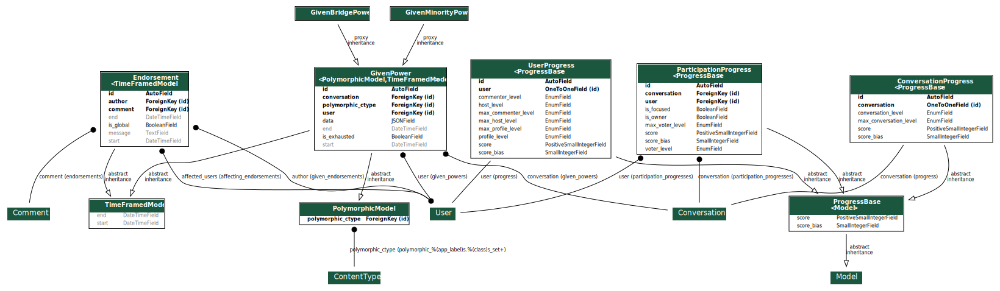
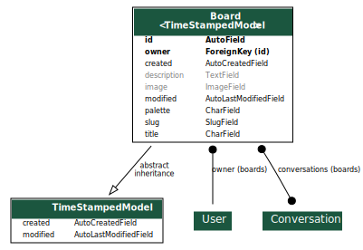

Architecture¶
High level overview¶
EJ adopts a monolithic architecture with the main server that controls business logic and some additional services that complement the application. The recommended way to deploy EJ is to run each service in a separate container in order to provide a good level of isolation. The aforementioned services are organized in a simple 3-layer architecture described bellow:
- Nginx
- Web traffic should not be handled directly by the application service. Gunicorn is not efficient to serve static files and an additional reverse proxy can also be used to enforce more strict security policies and more efficient caching. EJ adopts Nginx. It serves static files and redirect dynamic routes to the application service described bellow. The Nginx container must share some volumes with the Django application in order to find static files.
- Django Application
- EJ is written mostly in Python and uses the Django web framework. The main application service is responsible for all dynamic routes, which are generated by Django using the templating language Jinja2. The Django application should be run with a WSGI compatible service such as Gunicorn. This is the default approach adopted in the application container. The default task uses a number of workers equal to the number of CPU cores, which is usually the recommended configuration.
- SQL Database
- EJ does not use any database-specific functionality or raw SQL commands. This means that it can run in any database supported by Django such as Postgres SQL, MariaDB, Sqlite3, etc. We recommend Postgres (v10.0), which is used in the default installation. The database connection is controlled by the DJANGO_DB_URL environment variable in the main application container.
Rocket.Chat integration¶
Instances that deploy the optional Rocket.Chat integration must consider the additional services.
- Rocket.Chat
- Rocket.Chat is a Node.js application based on the Meteor framework that serves static files and the dynamic routes. EJ is compatible with the official Rocket.Chat container in Docker Hub, which is the recommended deployment method.
- Mongo DB
- Rocket.Chat persistence layer uses Mongo. The Rocket.Chat container is compatible with the official Docker Hub image and requires minimal configuration.
Frontend¶
EJ Frontend is implemented using the Jinja2 templating language and uses progressive enhancement to include styles via CSS and custom behaviors with JavaScript. The following presents a brief overview of the technologies used in each of those layers:
- CSS
- CSS is implemented with Sass using a ITCSS-inspired architecture (Inverse Triangle CSS). The CSS module is implemented using the Mendeleev.css framework for atomic CSS and can be easily customized using themes. The CSS assets are statically compiled and served by Nginx. Sass compilation requires libsass, which is bundled into the Python dependencies of the application.
- JavaScript/TypeScript
- EJ does not adopt any traditional JavaScript framework, but instead relies on progressive enhancement to add optional functionalities. EJ uses Unpoly in conjunction to jQuery to provide the core functionality. EJ-specific components are created using TypeScript and enhance tags annotated with the “is-component” attribute with extra behaviors and functionalities. TypeScript compilation requires the Node Package Manager (NPM) and Parcel.
Django application¶
Django splits a web system into modules called “apps” which implement reusable database models, routes and functionalities. This section describes all “apps” implemented in EJ.
EJ project¶
The ej module is not properly an app, but a regular Python package used to coordinate apps by defining settings, common functionality and loading static assets like Javascript, CSS, images, themes etc. The following is an overview of the main sub-packages and modules:
ej.all- Useful namespace to be used in a interactive section as
from ej.all import *. It imports models and managers of all ej apps and examples in the global namespace. ej.components- Similarly to
ej.roles, this module defines renderers for reusable UI elements. The difference between the two modules is that components can have a more complicated structure and may not be directly associated with some known Python data type. ej.contrib- Location to include ad-hoc migrations for specific deployments. Most users and developers should never touch this.
ej.fixes- Monkey patch third part modules that have known issues with EJ or any of its dependencies.
ej.forms- Base form classes that are used in other EJ apps. Forms are derived from django.forms.
ej.jinja2- EJ uses Jinja2 as the default templating language. This module configures the Jinja2 environment and set global functions and filters.
ej.roles- Functions that define Hyperpython roles. Roles are mappings of
(type, name) -> HTMLthat define how a certain object should be rendered in a given context or role. This module defines many reusable UI elements as Python functions. ej.routes- Define some global view functions such as the home page that do not have functionality tied to any app.
ej.services- Helper functions to initialize connections to external services such as Postgres SQL database and redis (if enabled).
ej.settings- Django settings module. Defines configuration using Django Boogie’s configuration framework in which configuration is defined in reusable classes instead of a flat Python module.
ej/templates/jinja2- Contains templates available globally. The global
base.jinja2template defines the base page HTML structure (navigation bars, meta information, etc) that is shared among most pages in the site. ej.testing- Helper tools used in testing across apps.
ej.tests- Global tests. Most tests are implemented in app-specific test folders.
ej.urls- URL mapping for the project. Most URLs are included from an app’s own
routes.py. ej.utils- Utility functions module.
ej.wsgi- Django wrapper for the WSGI interface.
Applications¶
The listing bellow describes all apps implemented inside EJ source tree.
ej_conversations
This is the main application and defines models for conversations, comments, and votes. The ej_applications app implements the UI for creating, configuring and interacting with conversations.
ej_users
This app defines the main User model for EJ and all routes related to authentication and account management (e.g., reset passwords, cancel account, etc). EJ can be used with Django’s regular users, although this is not encouraged.
ej_profiles
Implements profile management UI and defines a model that store profile information. This app can be easily modified to include extra profile fields or to remove unwanted fields for some particular installation.
ej_clusters
Implements the mathematical routines to classify users into opinion groups. The ej_clusters.math module implements our modified K-means algorithm that takes into account “opinion stereotypes” and also provides interfaces to manage those stereotypes and the resulting clusters.
ej_dataviz
Implements routines to visualize data about conversations. It generates structured reports and export data to spreadsheet-compatible formats. This module also implements visualization techniques such as Word Cloud and Scatter Maps of user opinions.
ej_gamification- 
The gamification app implements the points and badges system in EJ. Most interactions in the platform are rewarded with points. Users that achieve pre-defined levels of participation receive badges that recognize different types of interactions such as voting on comments, creating popular conversations, etc.
ej_boards- 
The boards app allow regular users to have their own “board” or “timeline” of conversations. The default conversation feed in “/conversations/” can only be managed by users with special permissions.
ej_experiments- This optional app is responsible for creating and saving testing data in the database. It is useful for development, but it is not enabled in deployment installations.
{kind=link}
{kind=link}
Third party Apps¶
boogie.apps.fragments- The Boogie fragments app implements configurable text or HTML fragments. This allows a greater level of configurability by allowing administrative users to customize parts of the platform without using any code.
rules- Django-rules implements a mechanism to define business logic rules by registering simple predicate functions. This package nicely integrates with Django’s own permission mechanisms. The business rules relevant to each EJ application are implemented into the respective “rules.py module of each Django app and can be overridden by third party apps or modules.
Django taggit- Django-taggit is a Django application that implements tags to arbitrary models. It is used to support tagging of EJ conversations.
rest_framework- The Django-Rest-Framework (DRF) is a powerful toolkit to develop REST Web APIs. EJ uses DRF through the rest_api module of Django-Boogie.
allauth, allauth.account, allauth.socialaccount- The allauth project implement authentication and authorization workflows and integration with third party OAuth providers such as Google, Twitter and Facebook.
App structure¶
EJ uses Django Boogie adopts an architecture that may be slightly different from a typical Django app. One important goal of the architecture is to make lightweight view functions and models. This is accomplished by either moving functionality to the Boogie framework itself or to splitting functionality into different modules.
A typical EJ App has the following structure:
<app>.admin- Django admin classes and functions.
<app>.api- Defines fields and API routes for the models defined by the app. Normally,
functionalities implemented in this module simply supplement the main API
declarations that are created using the
@rest_apidecorator directly on models. <app>.apps- Django AppConfig mechanism. EJ apps usually should override the
ready()method of the app config and import the api, roles and rules modules. <app>.enums- This modules defines any enum type that is eventually used by models. Enums are usually imported into the model base namespace, so they should have no dependency on models.
<app>.forms- Django forms defined for the app. Usually forms should inherit from ej.forms instead of using django.forms directly.
<app>.math- All math functions should be defined in this module. Complicated mathematical transformations should be implemented as ScikitLearn transformations or pipelines.
<app>.managers- In Django, model classes defines row logic and managers and querysets implements table logic. All methods that query or create models or filter querysets should be implemented in the “managers” module
<app>.models- Just like in regular Django apps, this module defines the models for the app. Models should avoid implementing business logic inside them and ideally should restrict to database actions such as querying, validation, etc.
<app>.mommy_recipes- EJ uses Model Mommy to create random fixtures for tests. This module should
define a class that derives from
ej.testing.EjRecipesand implements fixtures for each model defined in the app. This is only used in tests. <app>.routes- Regular Django apps have a views.py and a urls.py files. Django Boogies encourages to join both files into a single routes.py that defines view functions and maps them to routes using decorators.
<app>.rules- Business rules are implemented as regular functions inside this module. This helps avoiding the “fat-models” anti-pattern that is common in Django projects. The rules module can define both permissions (which are user-centric predicate functions) and regular “values”, which can return non-boolean values (e.g., number of comments user still has in conversation).
<app>.rolesHyperpython roles are simple functions that render objects in given contexts. For instance, we can register a “card” role to the Conversation class that renders the input conversation as a card in a listing view. Role functions must be associated with a type and a name describing is role and must return a Hyperpython html structure.
In cases that Jinja2 is more convenient than Hyperpython, the
ej.roles.with_templatedecorator can be used to associate the role with a Jinja template.<app>.tests- App’s unit tests.
<app>.validators- Implement the validation functions used in model fields or form fields inside the app.
Templates¶
Templates reside inside the <app>/jinja2/ folder. We use Django best practices
and save app-specific templates inside jinja2/<app-name>/<template-name>.jinja2.
Templates names usually mirror the names of view functions in the routes.py
file. For instance, a edit view for some conversation would be declared as:
urlpatterns = Router(template='ej_conversations/{name}.jinja2')
@urlpatterns.route("/<model:conversation>/edit/")
def edit(request, conversation):
... # Implementation
This view function is automatically associated with the ej_conversations/edit.jinja2
template, unless specified otherwise.
Most templates inherit from a base template at src/ej/templates/jinja2/base.jinja2.
This template imports navigation elements such as menus and toolbars.